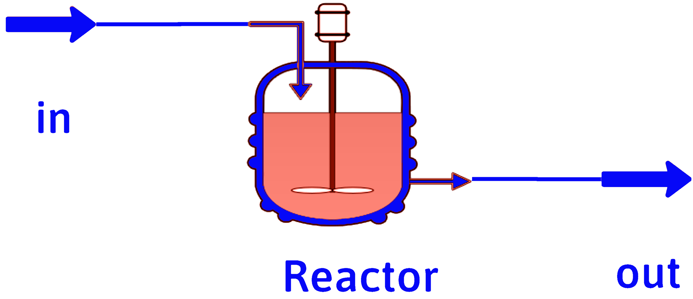

When You Saw It, What Was
the Extent of Your Reaction? Part 2
Just the Facts
DOFPro Team

Mole Balance for Multiple Reactions

\(\dot{n}_{i_\mathrm{in}}\)
\(\dot{n}_{i_\mathrm{in}}\)
Differential Balance
\[ \dot{n}_{i_\mathrm{out}} = \dot{n}_{i_\mathrm{in}} + \sum_{j=1}^J \nu_{ij} \dot{\xi}_j \]
\[ \dot{n}_\mathrm{out} = \dot{n}_\mathrm{in} + \sum_{j=1}^J \nu_{j} \dot{\xi}_j \]
Integral Balance
\[ n_{i_\mathrm{out}} = n_{i_\mathrm{in}} + \sum_{j=1}^J \nu_{ij} \xi_j \]
\[ n_\mathrm{out} = n_\mathrm{in} + \sum_{j=1}^J \nu_{j} \xi_j \]
\(\nu_{ij}\) is the stoichiometric coefficient for reactant \(i\) in reaction \(j\).
\(\nu_{j}\) is the overall stoichiometric coefficient for reaction \(j\).
\(\dot{\xi}_j,\ \xi_j\) is the extent of reaction j.
Sample with Multiple Reactions
\(2.00\ \mathrm{kmol/s}\) of propane are burned in 25% excess oxygen in a faulty combustor. 100% of the hydrogen combusts to form water, but only 80% of the carbon combusts completely to \(\mathrm{CO_2}\). The remainder combusts to \(\mathrm{CO}\).
- Calculate the molar flow rate of oxygen into the combustor.
- Calculate the molar flow rates of each of the combustion products.
- Calculate the total molar flow rate of the exhaust.
Solution
There are multiple sets of chemical equations we could write. We will use the following:
\[ \mathrm{C_3H_8 + 5O_2} \rightarrow \mathrm{3CO_2 + 4 H_2O} \tag{1}\]
\[ \mathrm{C_3H_8 + \frac{7}{2}O_2} \rightarrow \mathrm{3CO + 4H_2O} \tag{2}\]
To calculate excess oxygen, you need to calculate complete combustion. The appropriate equation is Equation 1.
\[ \dot{n}_\mathrm{O_2stoic} = \frac{\nu_\mathrm{O_2}}{\nu_\mathrm{C_3H_8}} \dot{n}_\mathrm{C_3H_8stoic} = \frac{-5}{-1}(2\ \mathrm{kmol/s}) = 10\ \mathrm{kmol/s} \]
Solution (cont.)
\[ \mathrm{frac.\ xs} = 0.25 = \frac{ \dot{n}_\mathrm{O_2in} - \dot{n}_\mathrm{O_2stoic} }{\dot{n}_\mathrm{O_2stoic}} \]
\[ \dot{n}_\mathrm{O_2in} = (1 + \mathrm{frac.\ xs})\dot{n}_\mathrm{O_2stoic} = 1.25(10\ \mathrm{kmol/s}) \] \[ = 12.5\ \mathrm{kmol/s} \]
for 25% excess oxygen.
Solution (cont.)
The full set of multiple reaction mole balances with Equation 1 and Equation 2 is
\[ \dot{n}_\mathrm{C_3H_8out} = \dot{n}_\mathrm{C_3H_8in} - \dot{\xi}_1 - \dot{\xi}_2 \implies \dot{\xi}_1 + \dot{\xi}_2 = 2\ \mathrm{kmol/s} \]
\[ \dot{n}_\mathrm{CO_2out} = \dot{n}_\mathrm{CO_2in} + 3\dot{\xi}_1 + 0 \boldsymbol{\cdot} \dot{\xi}_2 \implies \dot{n}_\mathrm{CO_2out} = 3\dot{\xi}_1 \]
\[ \dot{n}_\mathrm{COout} = \dot{n}_\mathrm{COin} + 0 \boldsymbol{\cdot} \dot{\xi}_1 + 3 \dot{\xi}_2 \implies \dot{n}_\mathrm{COout} = 3\dot{\xi}_2 \]
\[ \dot{n}_\mathrm{O_2out} = \dot{n}_\mathrm{O_2in} - 5\dot{\xi}_1 - 3.5 \dot{\xi}_2 = 12.50\ \mathrm{kmol/s} - 5\dot{\xi}_1 - 3.5 \dot{\xi}_2 \]
\[ \dot{n}_\mathrm{H_2Oout} = \dot{n}_\mathrm{H_2Oin} + 4 \dot{\xi}_1 + 4 \dot{\xi}_2 = 4 \dot{\xi}_1 + 4 \dot{\xi}_2 \]
Five equations in six unknowns, \(\dot{\xi}_1\), \(\dot{\xi}_2\), \(\dot{n}_\mathrm{CO_2out}\), \(\dot{n}_\mathrm{COout}\), \(\dot{n}_\mathrm{O_2out}\), and \(\dot{n}_\mathrm{H_2Oout}\).
Solution (cont.)
Applying the \(\mathrm{CO_2}\)-to-\(\mathrm{CO}\) constraint
\[ \frac{\dot{n}_\mathrm{COout}}{\dot{n}_\mathrm{CO_2out}} = \frac{1 - 0.80}{0.80}=0.25 = \frac{3\dot{\xi}_2}{3\dot{\xi}_1} = \frac{\dot{\xi}_2}{\dot{\xi}_1} \]
\[ \dot{\xi}_1 + \dot{\xi}_2 = 2\ \mathrm{kmol/s} = \dot{\xi}_1 + 0.25 \dot{\xi}_1 = 1.25 \dot{\xi}_1 \]
\[ \implies \dot{\xi}_1 = 1.6\ \mathrm{kmol/s},\ \dot{\xi}_2 = 0.4\ \mathrm{kmol/s} \]
\[ \implies \dot{n}_\mathrm{CO_2out} = 3 \boldsymbol{\cdot} 1.6\ \mathrm{kmol/s} = 4.8\ \mathrm{kmol/s}, \]
\[ \dot{n}_\mathrm{COout} = 3 \boldsymbol{\cdot} 0.4\ \mathrm{kmol/s} = 1.2\ \mathrm{kmol/s} \]
\[ \dot{n}_\mathrm{O_2out} = 12.5\ \mathrm{kmol/s} - 5 \boldsymbol{\cdot} 1.6 - 3.5 \boldsymbol{\cdot} 0.4 = 3.10\ \mathrm{kmol/s} \]
\[ \dot{n}_\mathrm{H_2Oout} = 4 \boldsymbol{\cdot} 1.6 + 4 \boldsymbol{\cdot} 0.4 = 8.00\ \mathrm{kmol/s} \]
Solution (cont.)
Solve for the total molar output flow rate two different ways. Sum the output flows
\(\dot{n}_\mathrm{CO_2out} + \dot{n}_\mathrm{COout} + \dot{n}_\mathrm{O_2out}+\dot{n}_\mathrm{H_2Oout} = 4.8+1.2 +3.1+8\) \(\ \ \ \ \ \ \ \ \ \ \ \ \ \ \ \ \ \ \ \ \ \ \ \ \ \ \ \ \ \ \ \ \ \ \ \ \ \ \ \ \ \ \ \ \ \ \ \ \ \ \ \ \ \ \ \ \ \ \ \ = 17.1\ \mathrm{kmol/s}\)
or calculate the overall stoichiometric coefficients and use the equation for overall flows
\[ \nu_1 = 3 + 4 -1 - 5 = 1 \]
\[ \nu_2 = 3 + 4 -1 - \frac{7}{2} = 2.5 \]
\[ \dot{n}_\mathrm{in} = \dot{n}_\mathrm{C_3H_8in} + \dot{n}_\mathrm{O_2in} = 2 + 12.5 = 14.5\ \mathrm{kmol/s} \]
\(\dot{n}_\mathrm{out} = \dot{n}_\mathrm{out} + 1 \boldsymbol{\cdot} \dot{\xi}_1 + 2.5 \dot{\xi}_1 = 14.5 + 1.6 + 2.5\boldsymbol{\cdot} 0.4\) \(\ \ \ \ \ \ = 17.1\ \mathrm{kmol/s}\)
The Takeaways
- Most reactors have multiple reactions going on simultaneously.
- For multiple reactions, the mole balance sums over all of the reactions, the stoichiometric coefficient for a reactant in a given reaction times the extent of that reaction.
Thanks for watching!
The Full Story companion video is in the link in the upper left. When You Saw It, What Was the Extent of Your Reaction? Part 3, the next video in the series, is in the upper right. To learn more about Chemical and Thermal Processes, visit the website linked in the description.